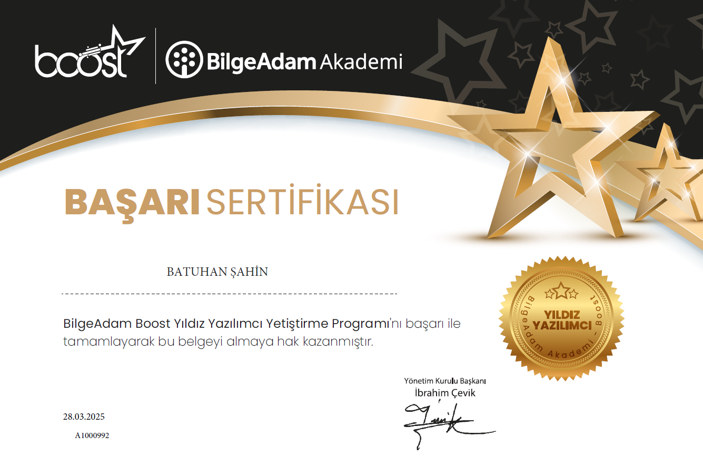

Certificates
📜 BilgeAdam BOOST Full-Stack Development Certificate
Completed the BilgeAdam BOOST Full-Stack Development Program, which included intensive training and a trainee / internship experience. The program covered ASP.NET MVC backend development, SQL databases, HTML, and React for modern frontend applications.

Click the certificate to enlarge
Computational & Engineering Research Experience
Conversion of DMA Data to Viscoelastic Master Curve and Prony Series Fitting
MSc Thesis – Boğaziçi University
Developed a numerical method in MATLAB to construct master curves from Dynamic Mechanical Analysis (DMA) data using WLF-based time–temperature superposition. Fitted Prony series via least squares to model viscoelastic material behavior, validated by finite element simulations of brain tissue under compression. This work connects constitutive modeling and continuum mechanics central to digital twin systems.
Modeling a Start-up Business with Saltwater Batteries and PV Panels for Power Continuity
Independent Study – Istanbul Technical University
Advisor: Dr. Sinan Küfeoğlu
Designed a techno-economic model for a hypothetical start-up using PV-sourced energy and saltwater battery storage. Collected real data from Turkish and Austrian manufacturers; applied business model canvas and financial feasibility (ROI) based on hospital energy usage data. While not directly mechanical, this project demonstrates applied systems modeling, real-world data analysis, and multidisciplinary integration — skills valuable in data-driven engineering and infrastructure applications.
.NET Projects
Pratic Blog (Feb 2025 - Mar 2025)
Technologies: ASP.NET Core MVC, C#, EF Core, SQL Server, LINQ, Identity, Bootstrap, JavaScript, Azure DevOps
- Developed scalable backend with ASP.NET Core MVC (Code-First Approach).
- Implemented role-based authentication using Identity.
- Optimized data queries with LINQ and SQL Server.
- Built responsive UI with Bootstrap and JavaScript.
- Applied Agile & Scrum practices; used Azure DevOps for CI/CD.
- Followed Repository & Unit of Work patterns for maintainable design.
User Management API (Sep 2025)
Technologies: ASP.NET Core Web API, C#, EF Core, PostgreSQL, MediatR (CQRS), FluentValidation, Swagger
- Built modular Web API with CQRS architecture using MediatR.
- Integrated EF Core and PostgreSQL for scalable data operations.
- Added robust input validation via FluentValidation.
- Used Swagger UI for API documentation and collaboration.
- Applied Clean Architecture principles for long-term maintainability.
Data Projects
World Happiness Data Analysis (Jul 2025)
Technologies: Python, Pandas, NumPy, Matplotlib, Seaborn, Jupyter Notebook, GitHub, Kaggle
- Performed end-to-end analysis of global happiness data (2015–2019).
- Used pandas for preprocessing, merging, and feature engineering.
- Created visualizations with Matplotlib and Seaborn for trend analysis.
- Identified top and bottom shifting countries with correlation insights.
- Delivered clean, reproducible, and visually engaging notebooks.